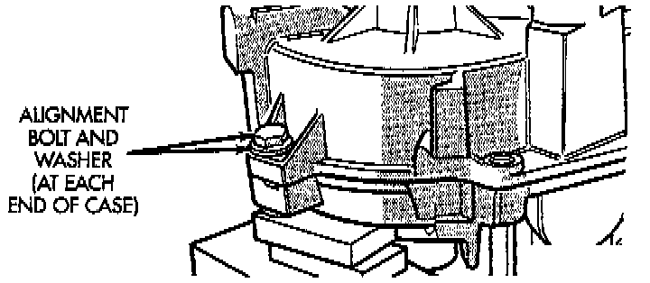
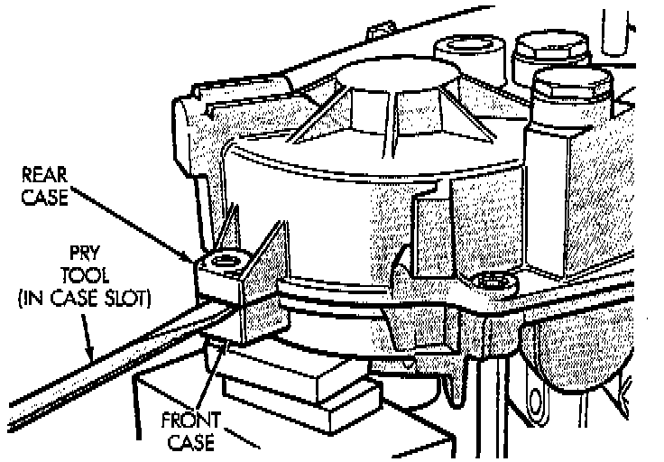
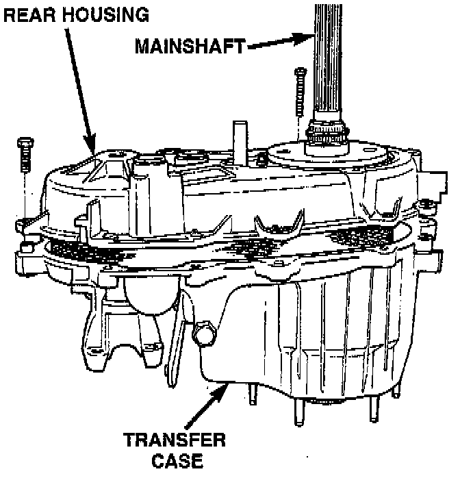
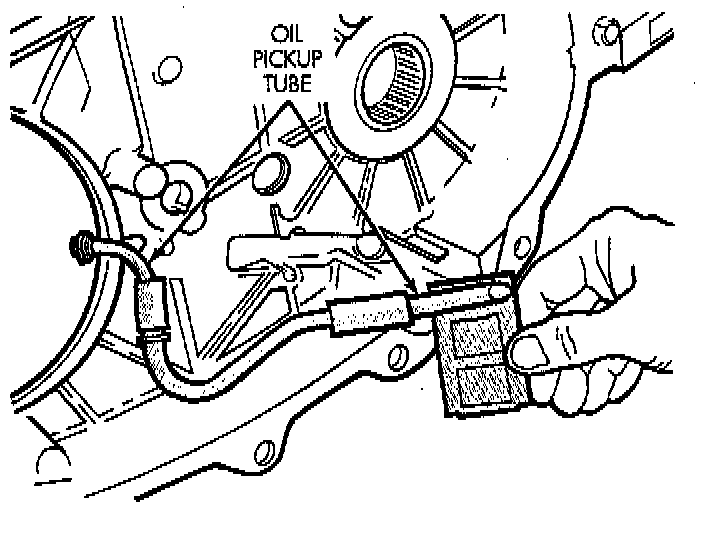
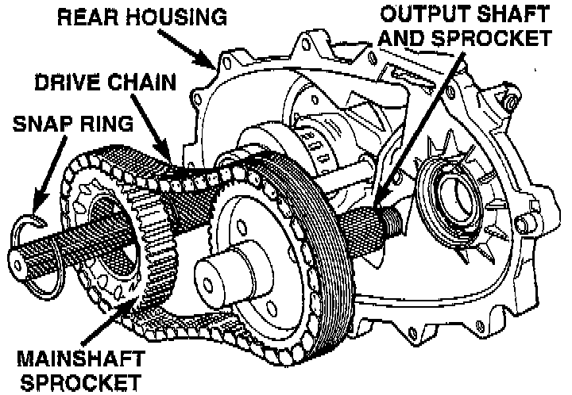

Front Output Shaft and Drive Chain Removal
1. Support transfer case so rear case is facing upward.
2. Remove bolts holding front case to rear case. The case alignment bolt require flat washers.

3. Loosen rear case with flat blade screwdriver to break sealer bead. Insert screwdriver blade only into notches provided at each end of case.

4. Remove rear case.

5. Remove oil pickup tube from rear case.

6. Remove drive gear snap-ring.
7. Disengage drive gear. Pry gear upward and off mainshaft as shown.
8. Remove front output shaft, drive chain and drive gear as assembly.